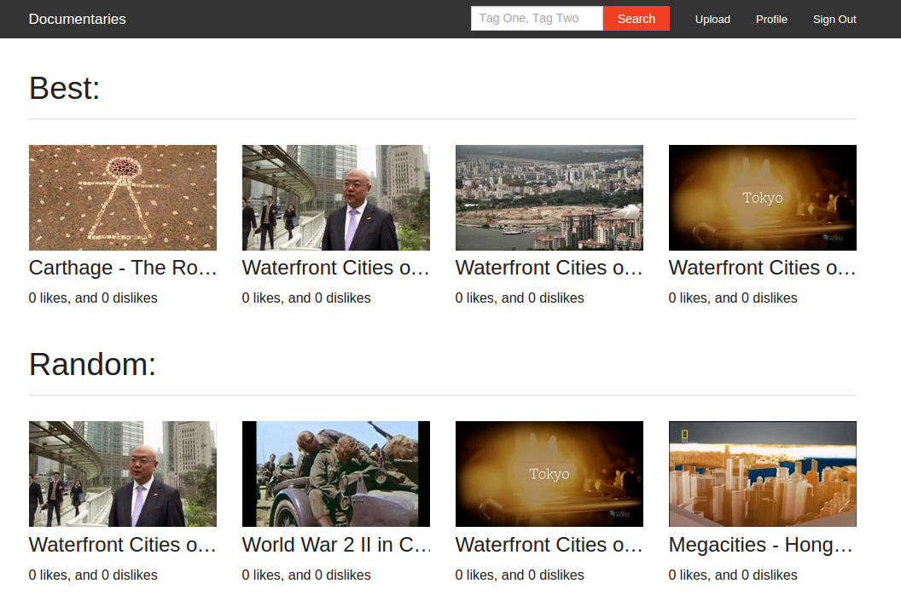
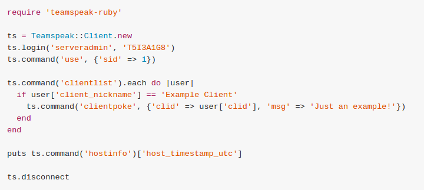
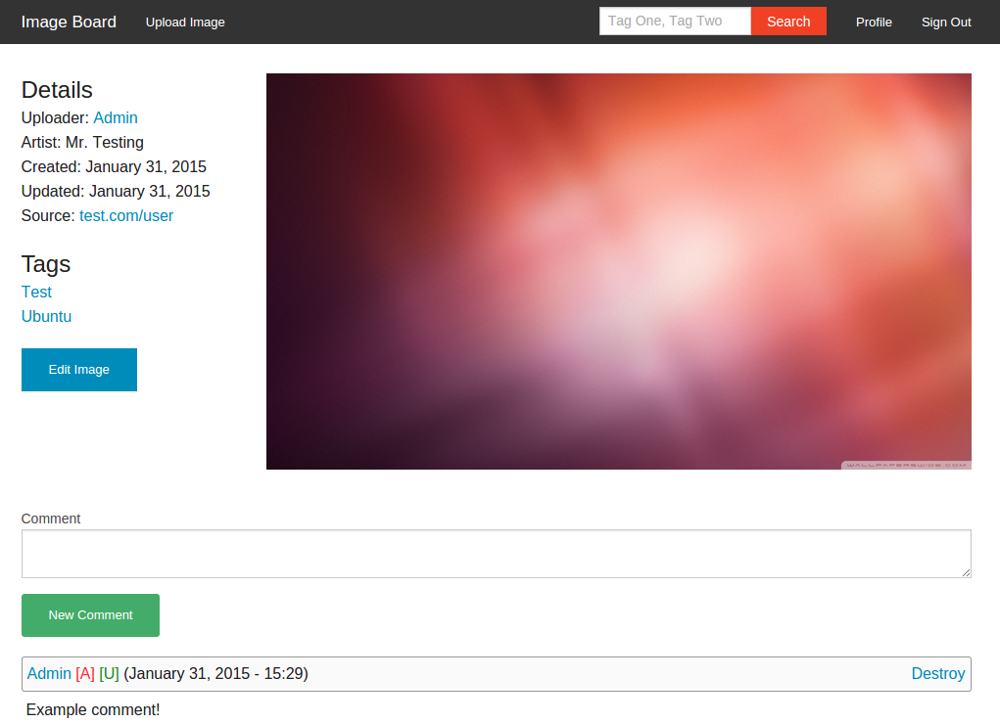
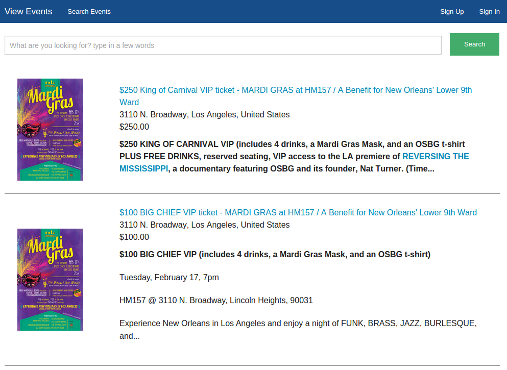
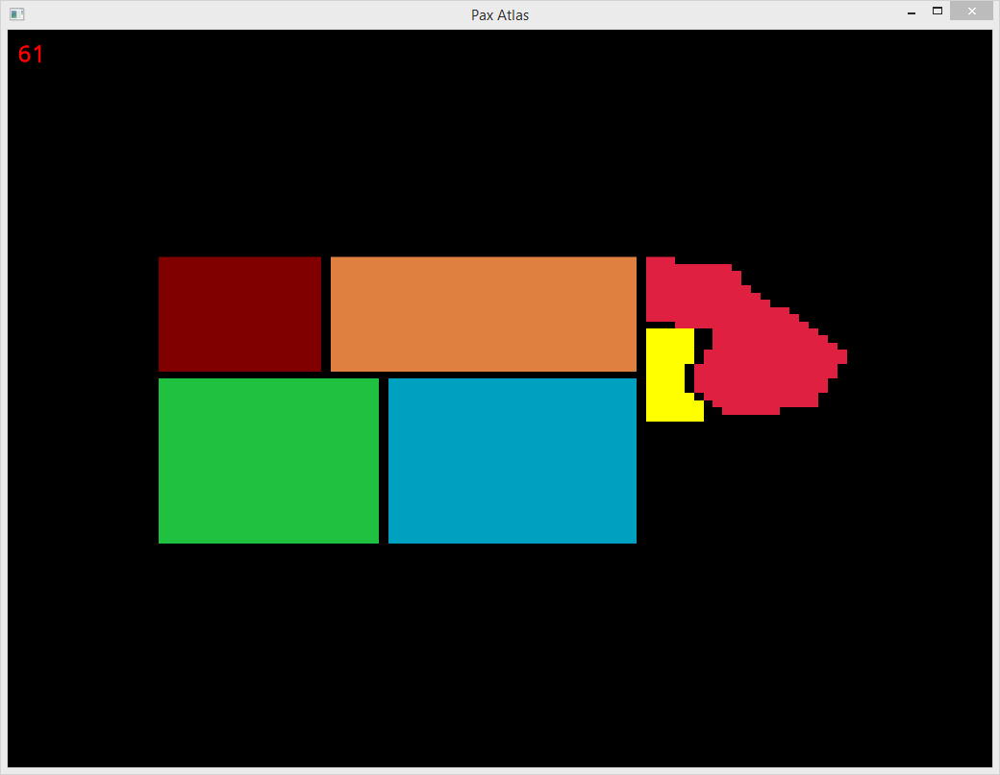
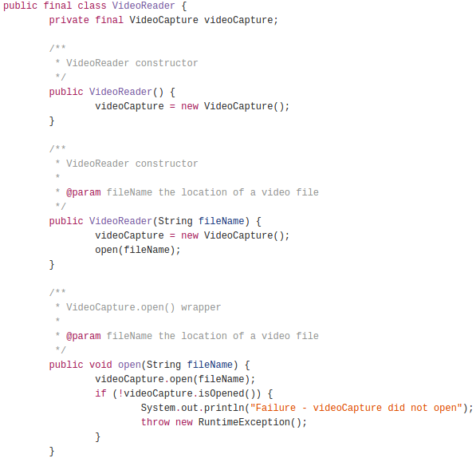

Projects
Documentaries
Ruby on Rails website built around sharing documentsaries. Should work with any genre of videos though.
Teamspeak Ruby
Ruby interface for TeamSpeak 3's server query api. Has over 3,500 dowloads through RubyGems.org, and 5 stars on GitHub.
Image Board
Ruby on Rails danbooru-style image board
LocalBuy.me
Website built around the idea of selling tickets to events. Made using Ruby on Rails, HAML, and ZURB Foundation.
Pax Atlas
Grand strategy video game built with C++ and the SFML framework. Uses JSON files to allow easy modifications.
Average Frame
Java application which calculates the average pixel arrangement out of each frame.
Work Experience
The Next Wave
Ruby Developer / Server Maintainer
June 2014 - Febuary 2015
- Migrated Teambox to the community ran fork Crewmate. Upgraded Ruby version from 1.8.7 to 1.9.3 to make use of security fixes and perfomance upgrades for Crewmate.
- Installed the employee scheduling application OpenSkedge. Ran into a few compatibility issues. One of which needed a modification of the source code.
- Integrated CloudFlare with Cpanel, Apache, and multiple Wordpress websites.
- General server maintance such as restoring database backups, fixing DNS issues, and solving Apache configuration issues.
Health Security Solutions
Ruby Developer
August 2014 - November 2014
- Installed Open Project on a Digital Ocean droplet. Alongside a custimization of Open Project to match the company's public image.
LocalBuy.me
Ruby Developer
August 2014 - November 2014
- Developed localbuy.me/tickets, an event ticket selling website built with Ruby on Rails 4 and Ruby 2.1.
- Migrated DNS hosting from a self-hosted BIND server to CloudFlare to make use of DDoS protection.
Netacar
Ruby Developer
May 2015 - June 2015
- Fixed broken search sliders on a HTML5 form by adding text input support, removing incompatible JavaScript libraries, and sanitizing user input on the back-end.